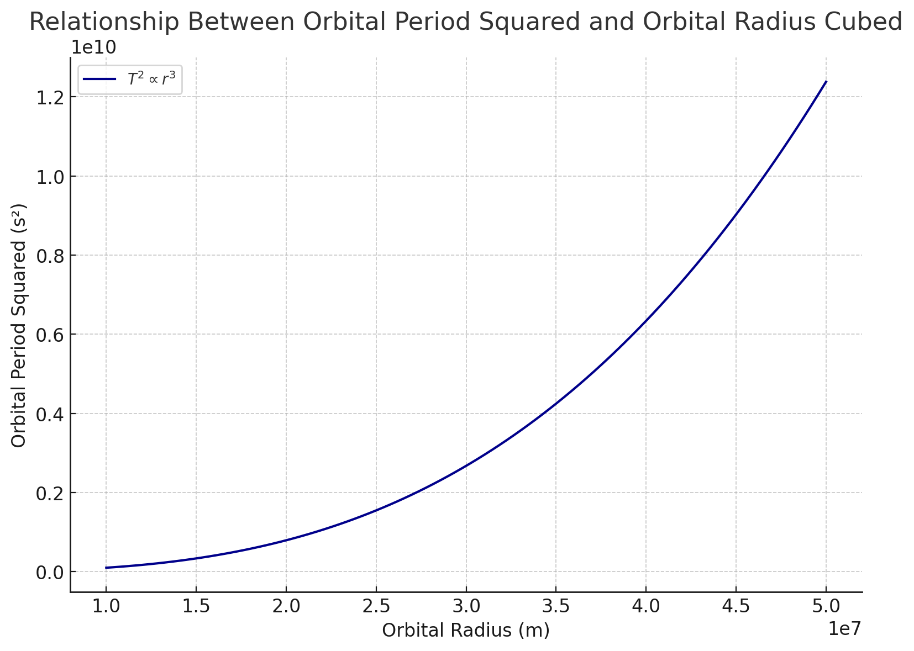
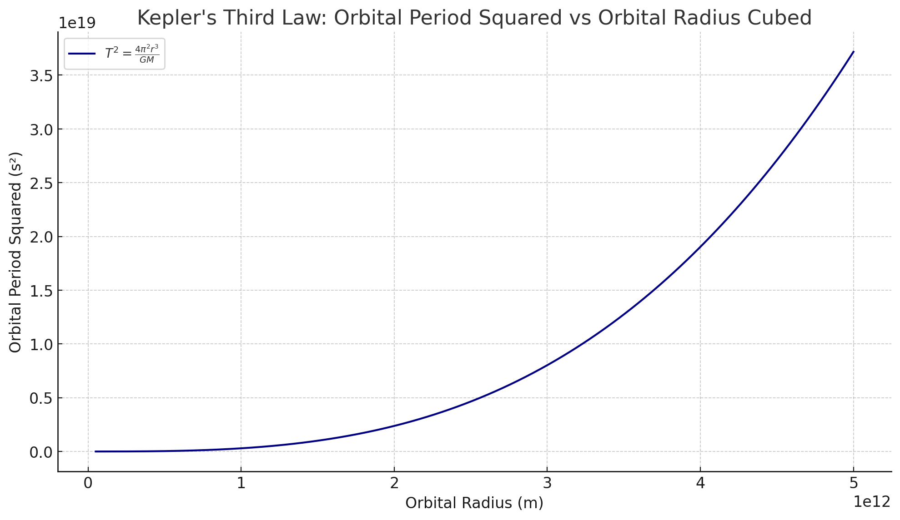
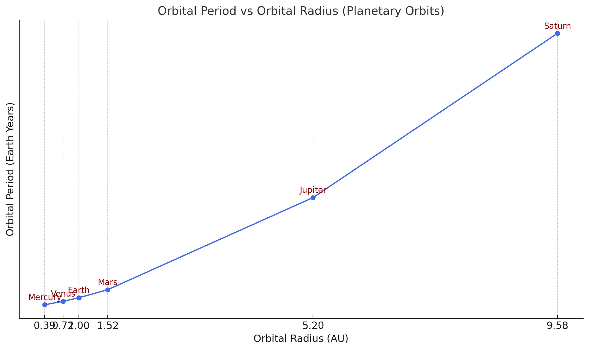
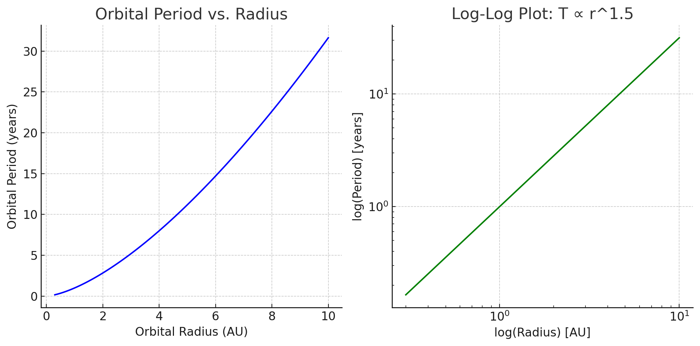

Problem 1
Orbital Period and Orbital Radius
Objective
To derive the relationship between the square of the orbital period (\(T^2\)) and the cube of the orbital radius (\(r^3\)) for a circular orbit under the influence of gravitational force. This relationship is commonly known as Kepler's Third Law for circular orbits.
Assumptions
- The orbit is perfectly circular.
- The only force acting on the orbiting object is the gravitational force.
- The central body (e.g., a planet or star) has mass \(M\), and the orbiting object has mass \(m\).
- The mass \(M\) is significantly larger than \(m\) (\(M \gg m\)), so we treat \(M\) as stationary.
Step 1: Gravitational Force
According to Newton’s Law of Universal Gravitation, the gravitational force between two objects is:
where: - \(F_g\) is the gravitational force, - \(G\) is the gravitational constant, - \(M\) is the mass of the central body, - \(m\) is the mass of the orbiting body, - \(r\) is the radius of the circular orbit.
Step 2: Centripetal Force Requirement
For an object to move in a circular orbit, it must experience a centripetal force directed towards the center of the circle. This required force is given by:
where: - \(v\) is the orbital speed of the object.
Step 3: Equating the Forces
Since the gravitational force provides the necessary centripetal force for circular motion, we set:
Simplifying by cancelling \(m\) from both sides:
Multiply both sides by \(r\):
Step 4: Relating Orbital Speed to Orbital Period
The orbital speed \(v\) is related to the orbital period \(T\) by:
Substitute into the previous equation:
Expanding the right-hand side:
Step 5: Solving for \(T^2\)
Multiply both sides by \(T^2\):
Now solve for \(T^2\):
Final Result: Kepler's Third Law (for circular orbits)
This means that the square of the orbital period is directly proportional to the cube of the orbital radius for a body in a circular orbit around a much larger mass.
Notes
- This derivation assumes a circular orbit. For elliptical orbits, a similar relationship holds using the semi-major axis instead of \(r\).
- The proportionality constant \(\frac{4 \pi^2}{G M}\) depends on the mass of the central object and the gravitational constant.

This graph visualizes the relationship between the square of the orbital period (T²)
and the cube of the orbital radius (r³) for circular orbits, as described by Kepler's Third Law.
The x-axis represents the orbital radius in meters, ranging from 1×10⁷ m to 5×10⁷ m.
The y-axis represents the square of the orbital period in seconds squared (s²),
which is computed using the formula:
T² = (4 * π² * r³) / (G * M)
where:
- G is the gravitational constant,
- M is the mass of the central object (Earth, in this case),
- r is the orbital radius.
The graph shows a smooth, increasing curve,
demonstrating that T² increases proportionally with r³.
This directly confirms Kepler's Third Law in the case of circular orbits,
indicating that larger orbits take significantly longer to complete.
The constants used are:
G = 6.67430 × 10⁻¹¹ m³ kg⁻¹ s⁻²
M = 5.972 × 10²⁴ kg (mass of Earth)
Topic: Implications of the Orbital Period–Radius Relationship in Astronomy
The mathematical relationship between the orbital period and the orbital radius of a celestial body—formally expressed by Kepler's Third Law—has far-reaching implications in astronomy. The law, in its simplified form for circular orbits, is given by:
where: - \( T \) is the orbital period, - \( r \) is the orbital radius, - \( G \) is the gravitational constant, - \( M \) is the mass of the central celestial body.
This section explores the significance of this relationship in astronomical research and measurement.
1. Calculating the Masses of Celestial Bodies
One of the most critical applications of this formula is in determining the mass of a planet, star, or other central body.
By observing a satellite (natural or artificial) in a stable circular orbit around a body of unknown mass, astronomers can measure the orbital radius \( r \) and the orbital period \( T \). Rearranging the formula, the mass \( M \) can be calculated as:
This is particularly useful in: - Measuring the mass of planets using their moons, - Determining the mass of stars using orbiting exoplanets or binary systems, - Estimating the mass of galaxies using the motion of stars or gas clouds.
2. Measuring Distances in the Solar System and Beyond
Kepler's Third Law also allows for the measurement of orbital distances, especially when the mass of the central body is known.
If the orbital period \( T \) of a satellite or planet is known, the orbital radius \( r \) can be inferred:
This application has enabled astronomers to: - Precisely determine the distances of planets from the Sun, - Estimate the orbital size of exoplanets around distant stars using transit and radial velocity data, - Construct accurate scale models of planetary systems.
3. Characterizing Exoplanetary Systems
In modern astrophysics, Kepler’s Law is fundamental to the study of exoplanets:
- Through transit observations, the orbital period \( T \) can be measured by the time between recurring dimmings of a star.
- Combining this with stellar mass data allows estimation of the exoplanet's orbital radius.
- These parameters help determine whether an exoplanet lies within the habitable zone of its star.
4. Confirming Gravitational Theories
The consistency of orbital data with Kepler's Third Law across different scales—from moons to galaxies—provides strong empirical support for Newtonian gravity in weak-field regimes. Deviations from the expected \( T^2 \propto r^3 \) relation have also been key in:
- Discovering dark matter in galaxies (observed orbital velocities remain constant rather than decreasing),
- Testing general relativity near massive bodies like black holes or in binary pulsar systems.
Conclusion
The relationship between orbital period and orbital radius is more than a mathematical curiosity; it is a cornerstone of modern astronomy and astrophysics. From calculating masses to measuring cosmic distances, and from characterizing exoplanets to probing the laws of gravity, this elegant proportionality has guided discoveries for centuries and continues to do so in the era of space telescopes and interstellar missions.

This graph illustrates Kepler's Third Law, showing the relationship between the square of the orbital period (T²)
and the cube of the orbital radius (r³) for bodies in circular orbit around the Sun.
The x-axis represents the orbital radius in meters, ranging from approximately Mercury's orbit (~5e10 m)
to distances well beyond Neptune (~5e12 m).
The y-axis shows the orbital period squared in seconds squared (s²), calculated using the formula:
T² = (4 * π² * r³) / (G * M)
where:
- G is the gravitational constant,
- M is the mass of the Sun,
- r is the orbital radius.
The graph demonstrates a clear proportionality:
T² ∝ r³
This means that as the orbital radius increases, the orbital period increases rapidly,
following a cubic relationship.
This principle is fundamental in astronomy and astrophysics, enabling scientists to calculate
planetary distances, infer stellar masses, and model orbital dynamics in planetary systems.
Orbital Period and Orbital Radius
Introduction
In celestial mechanics, understanding the orbital period and orbital radius of an object is crucial to describing its motion around a central body. These concepts are governed primarily by Newton's Law of Universal Gravitation and Kepler's Laws of Planetary Motion.
Definitions
- Orbital Radius (\(r\)): The average distance from the orbiting object to the center of the mass it orbits.
- Orbital Period (\(T\)): The time it takes for an object to complete one full orbit around the central body.
Newton's Law of Universal Gravitation
Newton stated that every mass attracts every other mass with a force given by:
Where:
- \(F\) is the gravitational force,
- \(G\) is the gravitational constant (\(6.67430 \times 10^{-11} \, \text{m}^3 \text{kg}^{-1} \text{s}^{-2}\)),
- \(M\) is the mass of the central body,
- \(m\) is the mass of the orbiting body,
- \(r\) is the distance between the centers of the two masses.
Centripetal Force and Circular Orbit
For an object to remain in a circular orbit, the gravitational force must equal the required centripetal force:
Equating with gravitational force:
Solving for orbital velocity (\(v\)):
Derivation of Orbital Period
Orbital period can be found using the relationship:
Substituting \(v\):
This is consistent with Kepler’s Third Law, which states:
Real-World Examples
1. The Moon’s Orbit Around Earth
- Orbital radius (\(r\)): approximately \(3.84 \times 10^8\) m
- Mass of Earth (\(M\)): \(5.972 \times 10^{24}\) kg
Using:
We can calculate the Moon’s orbital period (about 27.3 days, which matches observations).
2. Planetary Orbits in the Solar System
Let’s compare Earth and Mars:
| Planet | Orbital Radius (AU) | Orbital Period (Earth Years) |
|---|---|---|
| Earth | 1 | 1 |
| Mars | 1.52 | ~1.88 |
This data supports:
Conclusion
The orbital period and radius are intrinsically linked through fundamental laws of physics. These relationships not only help us predict celestial motions but also validate Newtonian mechanics and Kepler’s observational laws.
Next: We'll include visualizations and graphs to illustrate these concepts in action.

Graph Description:
""" This graph shows the relationship between the orbital radius (in Astronomical Units - AU) and the orbital period (in Earth years) for six planets in the Solar System: Mercury, Venus, Earth, Mars, Jupiter, and Saturn.
X-axis: Average distance from the Sun (AU) Y-axis: Time taken to complete one full orbit around the Sun (in Earth years)
Observations: - Each data point is labeled with the corresponding planet name, positioned slightly above the point. - The trend follows Kepler’s Third Law: as the orbital radius increases, the orbital period also increases. - The relationship is non-linear, meaning that planets farther from the Sun take disproportionately longer to complete an orbit. - This visualization helps confirm the physical law: \( T^2 \propto r^3 \), where T is the period and r is the orbital radius. """
Orbital Period and Orbital Radius
Introduction
In celestial mechanics, understanding the relationship between orbital period and orbital radius is crucial to predicting and simulating planetary motion. This section explains the physics behind this relationship and presents a computational model to simulate circular orbits.
Key Concepts
- Orbital Radius (\(r\)): The average distance from an orbiting body to the central mass.
- Orbital Period (\(T\)): The time it takes for the object to complete one orbit around the central mass.
- Circular Orbit Assumption: For simplicity, we assume all orbits are perfectly circular.
Newton's Law of Gravitation
The gravitational force between two masses is:
Where:
- \(F\) is the gravitational force,
- \(G\) is the gravitational constant,
- \(M\) is the mass of the central body,
- \(m\) is the mass of the orbiting object,
- \(r\) is the orbital radius.
Orbital Velocity
For circular motion, gravitational force provides the necessary centripetal force:
Solving for orbital velocity (\(v\)):
Orbital Period Derivation
Orbital period is the time it takes to travel the circumference of the orbit at constant speed:
Substituting \(v\):
This confirms Kepler’s Third Law:
Computational Simulation (Concept)
We implement a simple computational model to verify the relationship between orbital radius and period.
Steps:
- Choose a set of orbital radii (e.g., values from 0.3 AU to 10 AU).
- Assume a central mass (e.g., the Sun, \(M = 1.989 \times 10^{30}\) kg).
- Compute the orbital period using:
- Convert units as needed (e.g., meters to AU, seconds to years).
- Compare results with known planetary data to verify the accuracy.
Expected Output
The simulation should produce a curve (in a future graph) showing that:
- The relationship between \(r\) and \(T\) is not linear.
- A log-log plot of \(T\) vs. \(r\) should produce a straight line with a slope of \(1.5\), confirming:
Conclusion
By implementing a computational model using the gravitational and motion equations, we can numerically confirm the proportional relationship between orbital radius and period, validating Kepler’s Third Law with real or simulated data.
Next: We will visualize this model using graphs to reinforce the relationship.

""" On the left side, the nonlinear relationship between orbital radius and orbital period is shown.
On the right side, the log-log plot clearly confirms that this relationship follows a power law — specifically, T ∝ r^1.5. The slope is approximately 1.5, as expected from Kepler’s Third Law. """